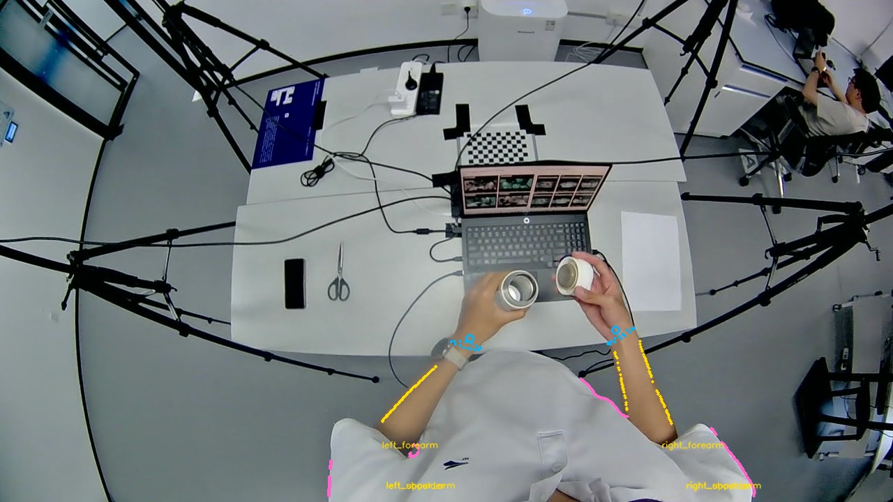
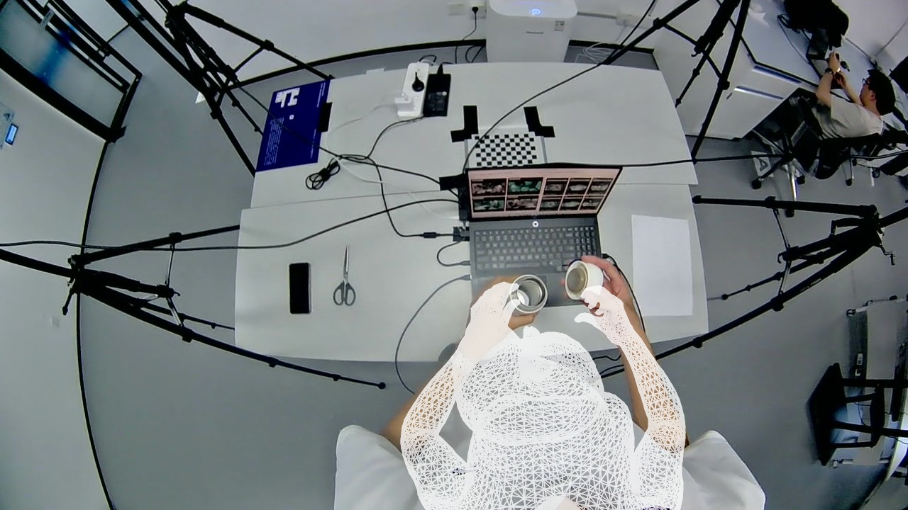
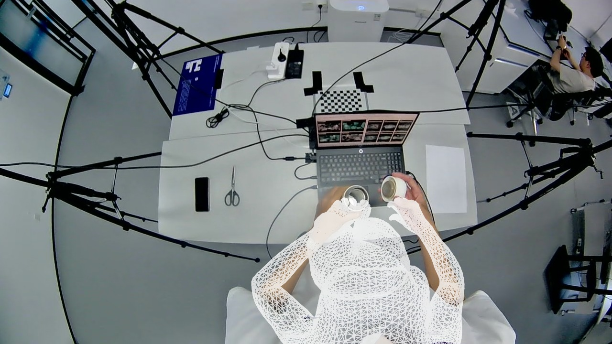
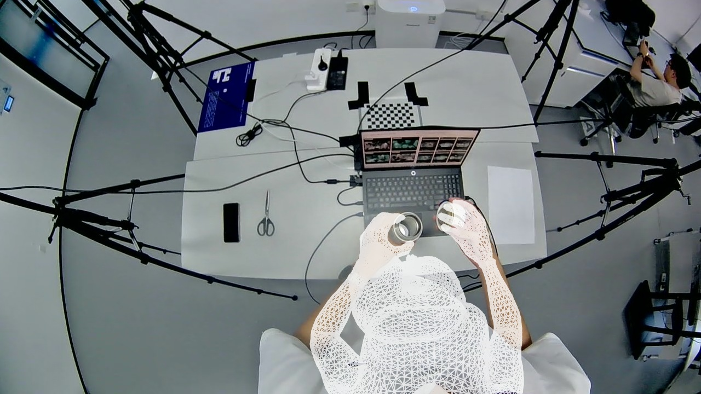
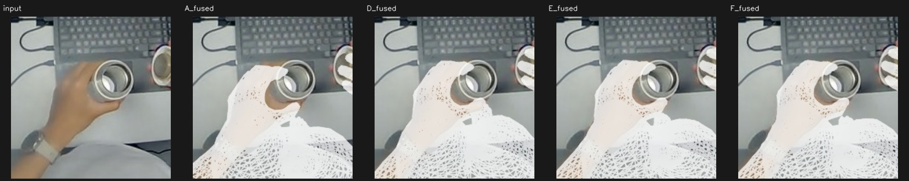
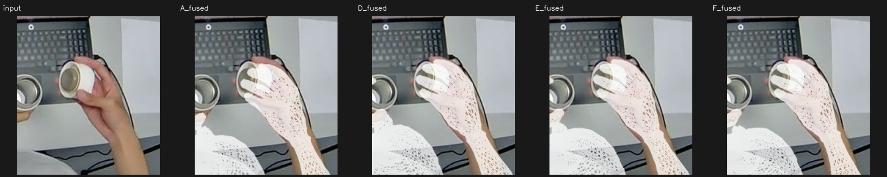

cam3 · 19.416 s
D/E/F均未出现此前的大幅头部外扩，手部投影更接近共同WiLoR自动目标，最终手部误差约4.12–4.24px（A为11.22px）。左腕局部交叉配对从A的3变为0，右腕保持0；肩部及整体身体偏差仍明显，最终身体误差约51.49–51.81px（A为49.70px）。E与F视觉差别较小，不能据自动目标误差声称真实三维已准确。
| 方案 | 身体阶段RMSE | 最终身体RMSE | 最终肩点RMSE | 最终手部RMSE | 交叉左/右 |
|---|---|---|---|---|---|
| A | 48.04 | 49.70 | 102.67 | 11.22 | 3/0 |
| B | 51.78 | 49.93 | 103.36 | 11.50 | 4/0 |
| C | 52.12 | 50.14 | 103.71 | 11.16 | 4/0 |
| D | 51.78 | 51.49 | 100.71 | 4.24 | 0/0 |
| E | 51.64 | 51.49 | 100.27 | 4.12 | 0/0 |
| F | 51.91 | 51.81 | 100.68 | 4.16 | 0/0 |
F实际采用的自动观测

| 区域 | 采用 | 皮肤点 | 衣服点 |
|---|---|---|---|
| left_shoulder | 是 | 0 | 29 |
| left_upper_arm | 是 | 0 | 30 |
| left_forearm | 是 | 64 | 8 |
| right_shoulder | 是 | 0 | 64 |
| right_upper_arm | 是 | 0 | 10 |
| right_forearm | 是 | 64 | 64 |
原始预测


刚体校正


Sapiens2 身体姿态优化


后续腕部优化



后续轮廓优化


后续 MANO 辅助身体

最终原接缝融合


左右手同区域放大

